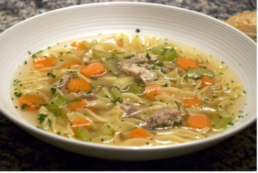

Toasted sesame seeds or toasted sliced almond for garnish (optional)
Directions
Preheat oven to 350 degrees Fahrenheit.
Heat oil in large skillet over medium heat. Add broccoli, bell pepper, and scallions; cook, stirring until softened, 3 to 5 minutes. Combine teriyaki sauce, water, cornstarch, and garlic in a measuring cup. Add to the pan along with chicken and rice and stir to combine well.
Transfer to the oven and bake until the vegetables are tender and warmed through, about 15 minutes. Serve sprinkled with sesame seeds, if desired.
Sweet and Sour Chicken Bowls
Ingredients
2 ½ pound bone-in, skinless chicken thighs
¼ cup cornstarch
1 tablespoon canola oil
2 scallions
¼ cup honey
2 tablespoons soy sause
2 teaspoons grated fresh ginger
2 teaspoons minced garlic
¾ teaspoon kosher salt
½ cup plus 1 tablespoon of rice vinegar
2 pouches precooked microwavable brown rice
3 cups packaged cabbage and carrot coleslaw
¾ cup thinly sliced radishes
1 tablespoon toasted sesame oil
Directions
Place chicken thighs in a large Ziplock bag; sprinkle with cornstarch and seal. Shake bag until chicken is evenly coated. Remove chicken; shake off excess cornstarch.
Heat canola oil in a large skilled over medium high heat. Add chicken and cook 3 minutes on each side or until browned. Place in a 5-6 quart slow cooker.
Thinly slice green parts of scallions. Finely shop white parts of scallions; stir together with ketchup, honey, soy sauce, ginger, garlic, salt, and ½ cup vinegar in a medium bowl. Pour sauce over chicken in slow cooked. Cover and cook on high for 3 hours until chicken is tender and cooked through. Carefully remove bones from each thigh after removing it from the slow cooker.
Heat rice according to package directions. Stir together coleslaw, radishes, sesame oil, and remaining tablespoon of vinegar in a large bowl.
Spoon cooked rice into bowls. Top with coleslaw mixture and chicken. Drizzle with sauce from slow cooked and sprinkle with scallion slices.
Chicken Noodle Soup with Spinach and Parmesan
Ingredients
2 tablespoons extra-virgin olive oil
2 cloves garlic, thinly sliced
1/4 teaspoon crushed red pepper
1/3 cup dry white wine
6 cups low-sodium chicken broth
1/4 teaspoon salt
1/4 teaspoon ground pepper
1/2 cup whole-wheat small elbow pasta
2 cups shredded cooked chicken breast
1 (5 ounce) package baby spinach
1/2 teaspoon lemon zest
1/2 teaspoon lemon zest
1/3 cup finely grated Parmesan cheese
Directions
Cook oil, garlic and crushed red pepper in a medium saucepan over medium-high heat, stirring constantly, until fragrant and sizzling, about 2 minutes. Stir in wine; cook, stirring once, until reduced by half, about 2 minutes.
Stir in broth, salt and pepper. Cover and bring to a boil over high heat. Add pasta; cook, stirring occasionally, until al dente, about 6 minutes.
Remove from heat. Add chicken and spinach; stir until the spinach is wilted, about 1 minute. Stir in lemon zest and lemon juice.
Divide the soup among 4 shallow bowls; sprinkle with Parmesan.

Creamy Chicken Pasta with Brussel Sprouts and Artichokes
Ingredients
2 tablespoons extra virgin olive oil
2 cloves garlic, thinly sliced
¼ teaspoon crushed red pepper
6 cups chicken broth
¼ teaspoon salt
¼ teaspoon ground pepper
½ cup small elbow pasta
2 cups shredded cooked chicken breast
1 (5 ounce) package baby spinach
½ teaspoon lemon zest
2 tablespoons lemon juice
1/3 cup finely grated Parmesan cheese
Directions
Cook oil, garlic, and crushed red pepper in a medium saucepan over medium high heat, stirring constantly, until fragrant and sizzling, about 2 minutes. Stir in wine, stirring once, until reduced by half, about 2 minutes.
Stir in broth, salt, and pepper. Cover and bring to a boil over high heat. Add pasta, cook, stirring occasionally, until al dente, about 6 minutes.
Remove from heat, add chicken and spinach. Stir until the spinach is wilted, about 1 minute. Stir in lemon zest and lemon juice. Sprinkle with Parmesan.
Salmon and Avocado Poke Bowl
Ingredients
1 pounds previously frozen wild salmon, cut into cubes
1 medium ripe avocado, diced
½ cup thinly sliced yellow onion
½ cup thinly sliced scallion greens
½ cup chopped fresh cilantro
¼ cup tobiko (flying fish roe) or other caviar
3 tablespoons tamari
2 tablespoons toasted sesame oil
½ teaspoon sriracha
2 cups short-grain brown rice, warmed
2 cups packed spicy greens, like arugula
2 tablespoons rice vinegar
2 tablespoons extra virgin olive oil
1 tablespoon Chinese-style or Dijon mustard
Directions
Gently combine salmon, avocado, onion, scallion greens, cilantro, tobiko, tamari, sesame oil, and Sriracha in a medium bowl.
Combine rice and greens in a large bowl. Whisk vinegar, oil, and mustard in a small bowl. Add to the rice salad and mix well. Serve the poke on the rice salad.